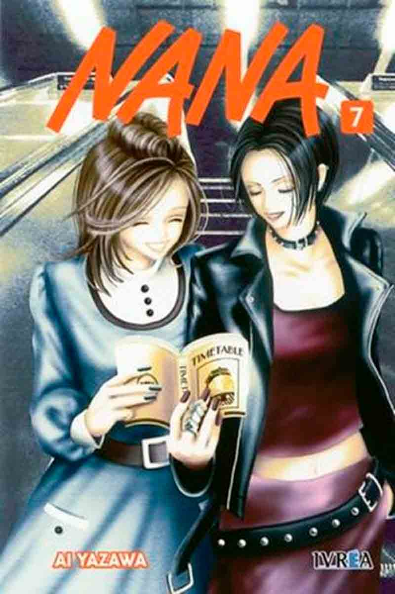
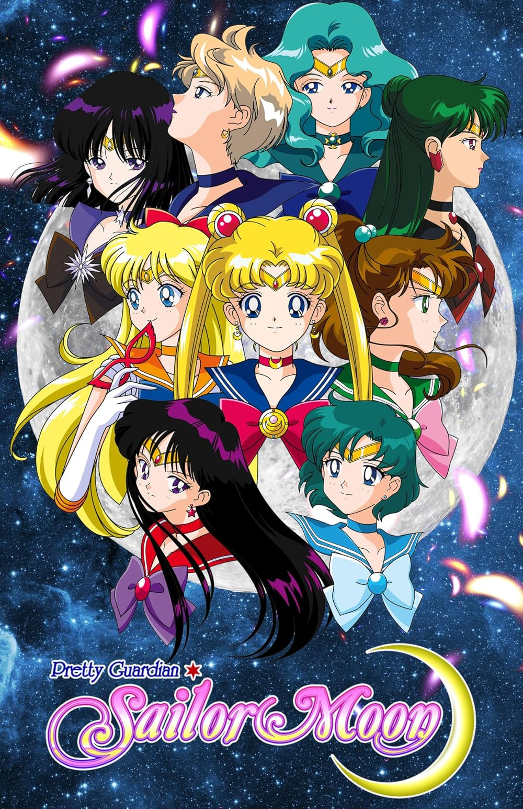
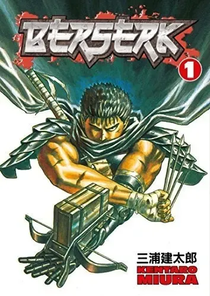
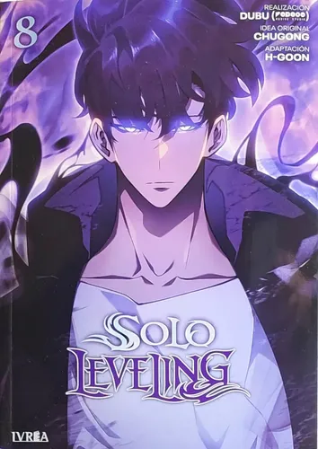
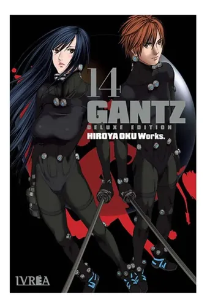
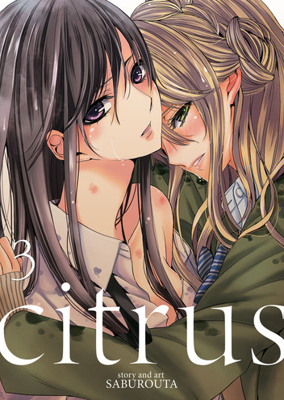

¿Qué es Proyecto Manga?
Proyecto Manga es un sitio web dedicado a los fanáticos del manga. Aquí podrás descubrir nuevas historias, géneros populares y recomendaciones.
Géneros Populares
- Shonen
- Shojo
- Seinen
- Josei
- Acción
- Terror
- Gore
- Yaoi
- Yuri
Mangas Recomendados
- One Piece
- Nana
- Sailor Moon
- Fullmetal Alchemist
- Berserk
- Solo Leveling
- Uzumaki
- Gantz
- Finder
- Citrus
Mangas Destacados
One Piece

One Piece es un manga creado por Eiichiro Oda y publicado por primera vez en 1997. La historia sigue las aventuras de Monkey D. Luffy, un joven pirata que sueña con encontrar el legendario tesoro conocido como "One Piece" para convertirse en el Rey de los Piratas.
Nana

Nana es un manga escrito e ilustrado por Ai Yazawa. La historia sigue a dos jóvenes llamadas Nana que se conocen por casualidad durante un viaje a Tokio. A pesar de tener personalidades y sueños muy diferentes, desarrollan una profunda amistad mientras enfrentan los desafíos del amor, la música, la independencia y la vida adulta.
Sailor Moon

Sailor Moon es una obra de Naoko Takeuchi que narra la historia de Usagi Tsukino, una estudiante que descubre que es una guerrera mágica destinada a proteger la Tierra. Junto a las Sailor Scouts, combate fuerzas malignas mientras aprende sobre amistad, valentía y responsabilidad.
Fullmetal Alchemist

Fullmetal Alchemist, creado por Hiromu Arakawa, cuenta la historia de los hermanos Edward y Alphonse Elric. Después de intentar utilizar la alquimia para recuperar a su madre fallecida, ambos sufren graves consecuencias. Su viaje se centra en encontrar la Piedra Filosofal para recuperar lo que perdieron y descubrir oscuros secretos del mundo.
Berserk

Berserk es un manga de fantasía oscura creado por Kentaro Miura. La historia sigue a Guts, un mercenario marcado por un pasado trágico que lucha por sobrevivir en un mundo lleno de violencia, traiciones y criaturas sobrenaturales.
Solo Leveling

Solo Leveling es una popular novela web y manhwa creada por Chugong. La historia sigue a Sung Jin-Woo, un cazador considerado el más débil de todos. Después de sobrevivir a una peligrosa misión, obtiene un misterioso sistema que le permite aumentar sus habilidades.
Gantz

Gantz es un manga creado por Hiroya Oku. La historia sigue a Kei Kurono y otros personajes que, después de morir, son transportados a una misteriosa habitación donde reciben misiones para cazar extraterrestres y criaturas peligrosas.
Uzumaki

Uzumaki es un manga de terror escrito e ilustrado por Junji Ito. La historia se desarrolla en un pequeño pueblo japonés donde una extraña obsesión por las espirales comienza a afectar a sus habitantes.
Citrus

Citrus es un manga de romance creado por Saburouta. La historia sigue a Yuzu Aihara, una estudiante cuya vida cambia cuando conoce a Mei Aihara, desarrollando una relación compleja marcada por conflictos familiares y emocionales.
Finder
Finder es un manga yaoi creado por Ayano Yamane. La historia sigue a Akihito Takaba, un joven fotógrafo que se ve envuelto en el peligroso mundo del crimen organizado.
Música Recomendada
Escucha una canción inspirada en Nana mientras exploras el sitio.
Lectura Recomendada
Si te gustan los mangas, manhwas y webtoons, te recomendamos visitar Lezhin Comics, una plataforma con una amplia variedad de historias de romance, acción, fantasía, terror y muchos otros géneros.
Visitar Lezhin Comics